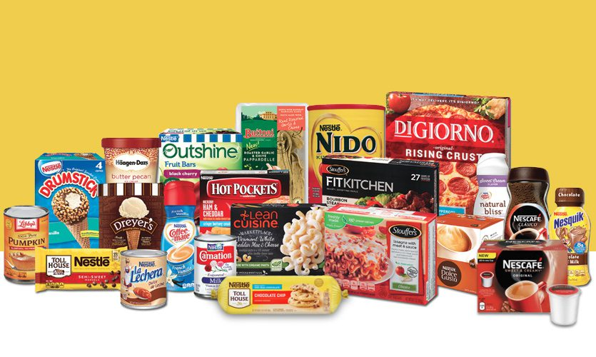

In the dynamic landscape of healthcare , Trust Care Hospital, led by its newly appointed Medical Director,is initiating a transformative journey. Recognizing the pivotal role of data in making informed decisions,the hospital is keen on harnessing data analysis expertise to address critical challenges within the hospital Emergency Room (ER).
Implementing the provided recommendation at Trust Care Hospital resulted in a 55% improvement in the ER performance,driving a 42% boost in the hospital revenue.
A particularly encouraging outcome was the positive impact on patient satisfaction,
with average ratings surging from 4.99 to an impressive 9.0 out of 10.


Texus electronics is at the forefront of the ever-evolving electronics industry. A leading technology distributor company, As the company undergoes expansion,
the management faces increasing challenges in maintaining regular oversight of customer demographics, preferences,
and other crucial details that play a pivotal role in enhancing both sales and customer satisfaction.

Nestlé, the largest food company globally, markets over 8,500 brands and 30,000 products, with operations spanning nearly 500 factories across five continents and a workforce of over 200,000 employees.
Nestlé R&D Australia specializes in developing micronutrient-fortified products for Nestlé Nutrition, aiming to address deficiencies. The company aims to expand its business by adding new product lines,
but the Head of Growth and Strategy emphasizes the importance of assessing the performance of current products beforehand..

Education for All fundraising is a charity organisation dedicated to facilitating education for children through fundraising events and other strategies.
the organisation is committed to supporting numerous children on their educational journeys.
I have been tasked by the Head of Fundraising to analyze donor insights and donation rates. The team aims to expand their donor base, boost donation frequency, and elevate donation values.
With an impending fundraising strategy meeting coming up for the next year, the objective is to present data-driven insights to shape our fundraising strategy and enhance donation.

The administration at Greenhill Medical Center sought a comprehensive analysis of the hospital's financial status and the effectiveness of its medical staff.
Their aim was to develop an interactive dashboard for the hospital board members,
simplifying the presentation of these insights through a thorough examination of the institution's transaction records within a specific timeframe.
.
MEKKO Retail Inc. is a global retail chain with multiple departments ranging from Books to Automotive. With its vast presence in different countries,
it serves customers daily.
As a Data Analyst, my task was to Analyze Mekko Customer’s Demographics And Shopping Preferences ,
create an insightful Excel dashboard, and offer actionable recommendations. Based on the insights gained, I recommend implementing an incremental increase in stock levels across the top 5 countries with the highest patronage.
Also, Increment in Stock and awareness of products that serve other genders as well to promote inclusivity.